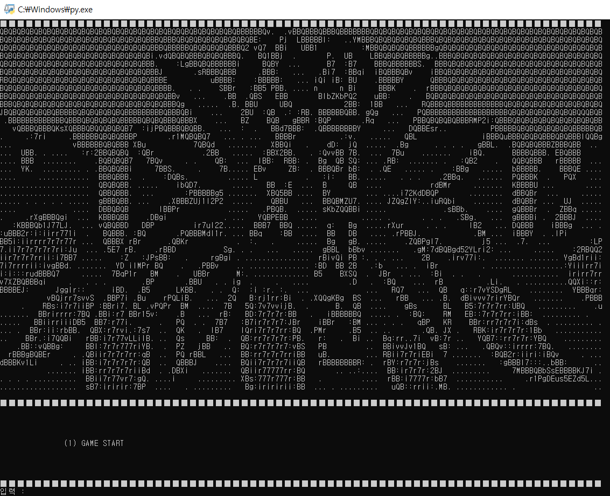

게임프로그래밍입문 강의에서 탄생하였습니다.
파이썬으로 제작된 게임으로 스토리 추리 게임입니다. 입력으로 게임이 진행되며 cmd 위에서 진행됩니다.
수사관인 주인공은 한 마을에 사건이 일어나 해결하러 가게 됩니다. 처음에는 사고라고 생각했던 것이 조사를 통해 점차 초자연적인 현상과 관련이 있다고 생각하게 됩니다. 이 마을에선 무슨 일이 일어난 것 일까요? 당신이 직접 그 비밀을 밝혀보세요.
<구매 / 15,000원>
이 사이트의 과거가 궁금하다면 한 번 방문해보는 것도 추천합니다